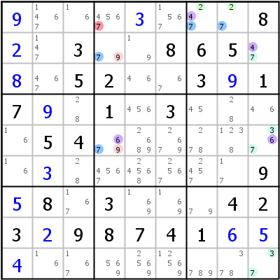

HoDoKu Solving Technique Index: Example for "ALS-XY-Wing"

Original sudoku:
........8..3..865...52..3.17..1.3....54..............9.8.3...423.98741...........
Use the following line if you want to load the sudoku in HoDoKu:
:9002:7:+9...+3...8+2.3..865.+8.52..3+917+9.1.3....54.......+3......9+58.3...423+298741+6+5+4........:713 424 425 643 245 845 247 847 758 163 663 867 268 868 792 195:714:
The following representation can be pasted in most Sudoku programs:
.---------------.--------------------.-----------------. | 9 1467 16 | 4567 3 1567 | 247 27 8 | | 2 147 3 | 79 19 8 | 6 5 47 | | 8 467 5 | 2 46 67 | 3 9 1 | :---------------+--------------------+-----------------: | 7 9 28 | 1 456 3 | 45 28 46 | | 16 5 4 | 679 2689 2679 | 278 1238 367 | | 16 3 28 | 4567 24568 2567 | 2457 17 9 | :---------------+--------------------+-----------------: | 5 8 167 | 3 169 169 | 79 4 2 | | 3 2 9 | 8 7 4 | 1 6 5 | | 4 16 167 | 569 2569 12569 | 789 378 37 | '---------------'--------------------'-----------------'
Representation of the step:
.---------------.----------------------.--------------------.
| 9 1467 16 | 456-7 3 1567 | A247 A27 8 |
| 2 147 3 | B79 19 8 | 6 5 C47 |
| 8 467 5 | 2 46 67 | 3 9 1 |
:---------------+----------------------+--------------------:
| 7 9 28 | 1 456 3 | 45 28 46 |
| 16 5 4 | B679 2689 2679 | 278 1238 C367 |
| 16 3 28 | 4567 24568 2567 | 2457 17 9 |
:---------------+----------------------+--------------------:
| 5 8 167 | 3 169 169 | 79 4 2 |
| 3 2 9 | 8 7 4 | 1 6 5 |
| 4 16 167 | 569 2569 12569 | 789 378 C37 |
'---------------'----------------------'--------------------'
Almost Locked Set XY-Wing: A=r1c78 {247}, B=r25c4 {679}, C=r259c9 {3467}, X,Y=4,6, Z=7 => r1c4<>7
Copyright © 2008-12 by Bernhard Hobiger
Last modified on May 5, 2025 by shorty#3746
(based of the 1to9only Github repo)
All material on this page is licensed under the GNU FDLv1.3.